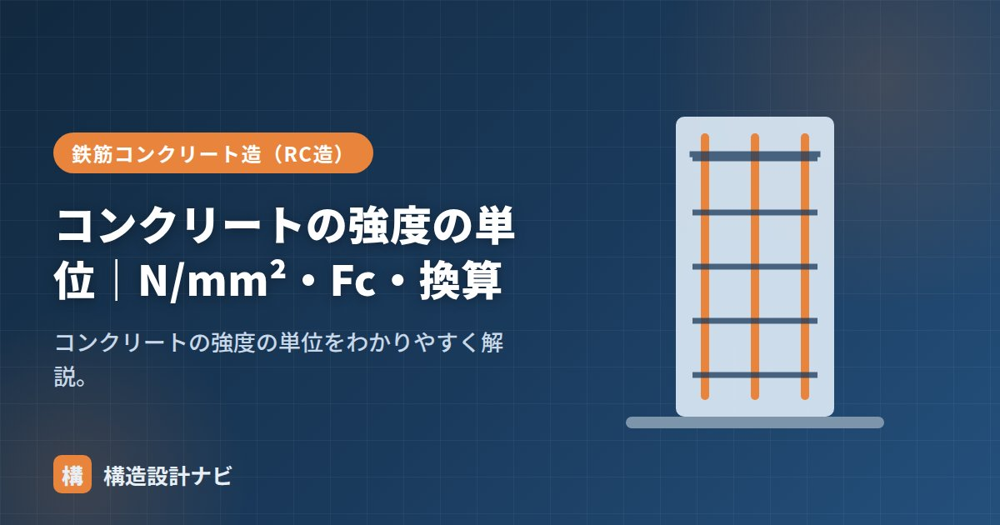

コンクリートの強度の単位｜N/mm²・Fc・換算

コンクリートの強度とは、材料が壊れずに耐えられる力の大きさを表す指標のことで、N/mm²（ニュートン毎平方ミリメートル）という単位で表します。図面や仕様書には「Fc24」のような記号もよく登場するため、単位の意味・記号の読み方・旧単位との換算を整理しておくと、構造の資料を読み解くうえで役立ちます。
- コンクリートの強度の単位はN/mm²（＝MPa）。1mm²あたりに耐えられる力
- Fc（エフシー）は設計基準強度を表す記号。Fc24＝24N/mm²
- 旧単位のkgf/cm²とは1N/mm²≒10.2kgf/cm²で換算する
N/mm²とは
強度は「単位面積あたりに耐えられる力」で表します。1N/mm²＝1mm²あたり1ニュートンの力に耐える強さです。読み方は「ニュートン パー へいほうミリメートル」。鉄筋の強度やその他の材料強度でも同じ単位が使われ、構造計算全体を通して共通の物差しになっています。
Fc（設計基準強度）の読み方
Fcは設計基準強度を表す記号で、「エフシー」と読みます。たとえば「Fc24」は設計基準強度24N/mm²のことです。Fcは構造計算のうえで許容応力度などを求める際の基準となる値で、コンクリートの品質を表す最も基本的な指標のひとつです。
その他の強度記号
設計基準強度Fcのほかにも、品質基準強度を表すFq、耐久設計基準強度を表すFdなど、目的に応じたさまざまな強度記号があります。いずれも単位はN/mm²で共通しており、記号の違いはその強度が何を基準に定められているかを示しています。
旧単位との換算
昔はkgf/cm²が使われていました。換算は次のとおりです。
古い図面や文献にkgf/cm²の表記が残っていることがあるため、現行のN/mm²表記と混同しないよう、換算の考え方を知っておくと安心です。
N/mm²とMPa（メガパスカル）は数値がまったく同じであるため混乱しにくい一方、旧単位のkgf/cm²は数値が約10倍近く異なります。古い資料の数値をそのままN/mm²として読み違えると、強度を大きく見誤るため注意が必要です。
Q1. なぜ日本ではN/mm²が使われるようになったのですか？
国際的に単位を統一するSI単位系（国際単位系）への移行にともない、力の単位がキログラム重（kgf）からニュートン（N）に切り替えられました。これにより、強度の単位もkgf/cm²からN/mm²（MPa）へと移行しています。
Q2. コンクリート以外の材料もN/mm²で表しますか？
はい。鉄筋や鋼材の強度も同じくN/mm²で表され、構造計算では材料の種類にかかわらず共通の単位で比較できるようになっています。
「生コンの強度（Fc21）」「設計基準強度」「許容応力度」をどうぞ。
既存建物の古い構造図を読み解くとき、kgf/cm²表記の数値をそのままN/mm²と勘違いしそうになる場面が何度もありました。若手にチェックを頼むときは、まず単位系がどちらなのかを声に出して確認させるようにしています。
強度記号の関係（図解）
Fc・Fq・Fd と似た記号が並ぶため、どれがどの段階の強度なのかを整理しておきましょう。
単位の換算と数値の感覚
古い図面や海外資料では別の単位が使われていることがあります。換算表を持っておくと読み解きに便利です。
| 単位 | N/mm²への換算 | 使われる場面 |
|---|---|---|
| MPa（メガパスカル） | 1 MPa ＝ 1 N/mm² | 土木分野・海外規格。まったく同じ大きさ |
| kgf/cm² | 1 kgf/cm² ≒ 0.098 N/mm² | 1990年代以前の図面。おおよそ1/10 |
| kN/m² | 1,000 kN/m² ＝ 1 N/mm² | 地耐力・荷重など面圧の表現 |
旧単位のkgf/cm²は、おおよそ10倍すればN/mm²に近い値になります。たとえば旧図面の「210kgf/cm²」は、現在のFc21に相当します。実際は1kgf＝9.8Nなので厳密には20.6N/mm²ですが、規格の呼び値としてFc21が対応します。
Fc24のコンクリートは「1mm²あたり24N＝約2.4kgに耐える」ということです。1cm²（100mm²）なら240kg。手のひらサイズ（10cm×10cm＝1万mm²）では24トンに耐える計算になります。一方、鉄筋（SD345）は345N/mm²と14倍以上。この差が「圧縮はコンクリート、引張は鉄筋」という役割分担の背景にあります。
よくある質問
Q1. なぜコンクリートの強度は圧縮強度で表すのですか？
コンクリートが実際に力を発揮するのが圧縮だからです。引張強度は圧縮の1/10程度しかなく、設計では原則として無視して鉄筋に負担させます。そのため、コンクリートの品質を代表する指標として圧縮強度が用いられ、設計基準強度Fcも圧縮強度で定義されています。引張強度が必要な検討では、圧縮強度から推定する式が使われます。
Q2. Fc21とFc24ではどのくらい違うのですか？
設計基準強度が3N/mm²、割合にして約14%の差です。許容応力度に換算すると、長期許容圧縮応力度が7.0から8.0N/mm²に上がります。同じ軸力なら断面を約12%小さくできる計算です。ただしヤング係数は強度の平方根程度でしか増えないため、剛性（変形のしにくさ）はそこまで大きく変わりません。
Q3. 生コンの「呼び強度」も同じ単位ですか？
同じN/mm²です。呼び強度は生コンを発注する際に指定する強度で、18・21・24・27・30…といった区切りの値が用意されています。設計基準強度Fcに耐久性の要求と構造体強度補正値を加味して決まるため、Fcと呼び強度は必ずしも同じ数値になりません。たとえばFc24でも、補正値3を加えて呼び強度27を発注する、といったことが起こります。
まとめ
- コンクリートの強度の単位はN/mm²（＝MPa）。1mm²あたりの力。
- Fc（エフシー）は設計基準強度。Fc24＝24N/mm²。
- Fq・Fdなど、目的に応じたさまざまな強度記号がある。
- 旧単位は1N/mm²≒10.2kgf/cm²で換算する。読み違いに注意。